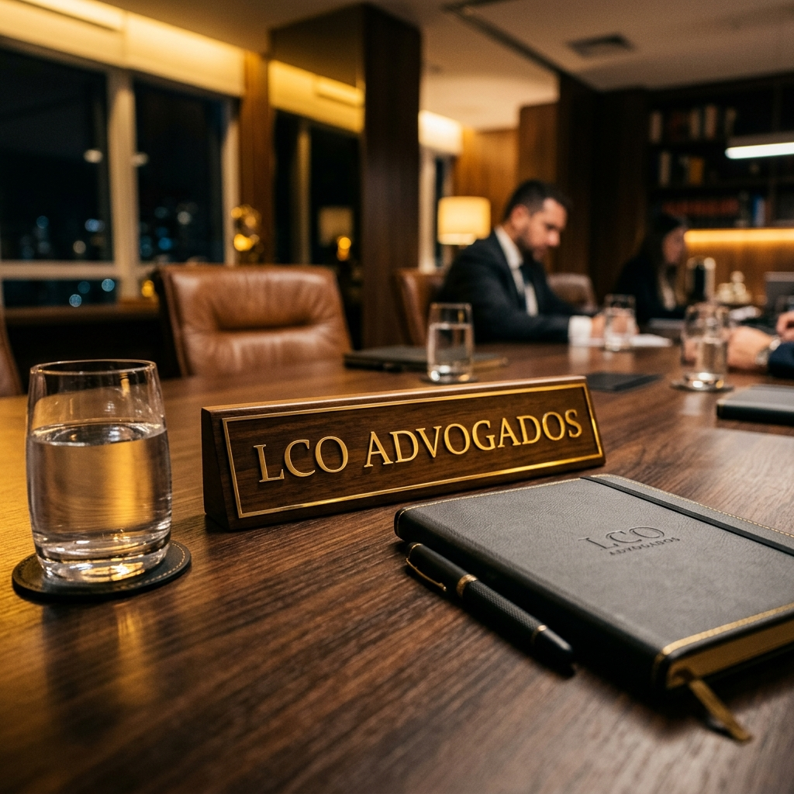
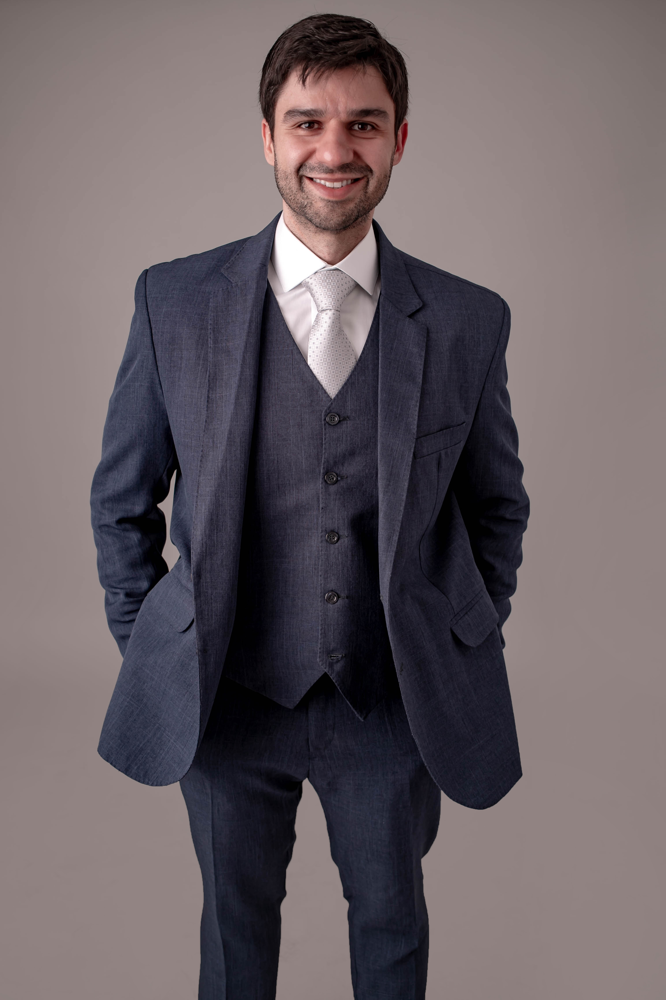
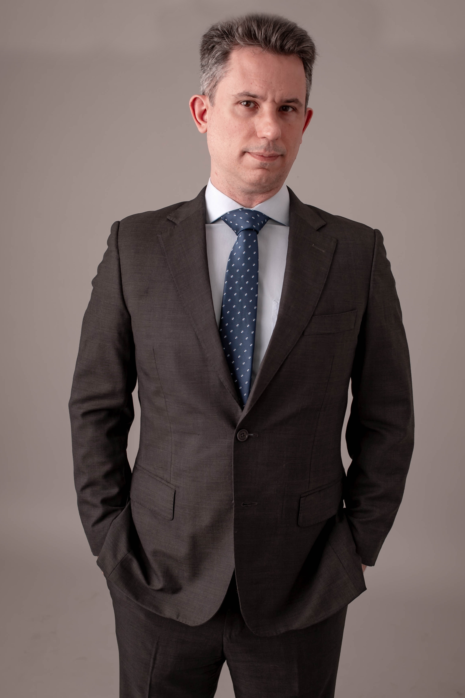

Parceria estratégica e inteligência jurídica conectadas ao lado humano dos negócios.
Acreditamos que cada empresa possui desafios únicos que não podem ser resolvidos de forma genérica.
Por isso, adotamos o conceito de boutique jurídica, mantendo uma estrutura altamente especializada e um número controlado de clientes corporativos. Isso possibilita que cada sócio atue diretamente e em profundidade no planejamento, na estruturação e no contencioso das companhias sob nossa assessoria.
Nosso objetivo primordial é a eficiência e segurança jurídica, alinhando de forma harmônica a estrutura legal das empresas com suas metas financeiras e de governança.
Corpo Técnico Sênior
Nossos sócios fundadores combinam sólida formação acadêmica e vasta experiência prática em assessoria empresarial preventiva e defesas tributárias de alta complexidade.

Luís Fernando Costa Oliveira
Advogado com mais de 12 anos de experiência, especialista em Direito Empresarial e Tributário. Ao longo de sua carreira, desenvolveu ampla experiência prática na condução de conflitos familiares e societários. É certificado como conselheiro e capacitado em negociação e resolução de conflitos, apoiando ativamente empresas familiares em processos de sucessão e governança estrutural. É professor da Escola Superior de Advocacia (ESA), tendo ministrado diversos cursos práticos sobre investimentos em startups, contratos de vesting e holdings corporativas. Mantém formação e especialização contínua em ramos do Direito Tributário, Societário, Contratos e Planejamento Familiar.

Rodrigo Alves Rezende Oliveira
Advogado e consultor jurídico/tributário com mais de 17 anos de experiência de alta performance, especialista em Direito Tributário. É Procurador concursado da Fazenda do Município de Lagoa Santa (MG) e ex-conselheiro do Conselho de Recursos Fiscais municipal, com notória experiência no julgamento e representação de processos administrativos complexos envolvendo contribuintes. Possui sólida e profunda experiência prática e técnica na gestão de questões fiscais complexas, atuando de forma estratégica em processos judiciais e administrativos e elaboração de pareceres técnicos, integrando com rigor a contabilidade tributária às soluções jurídicas. É professor na Escola Superior de Advocacia de São Paulo (ESA/SP).